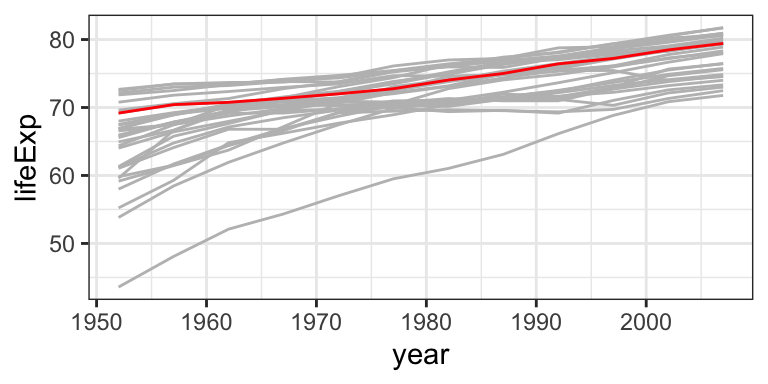
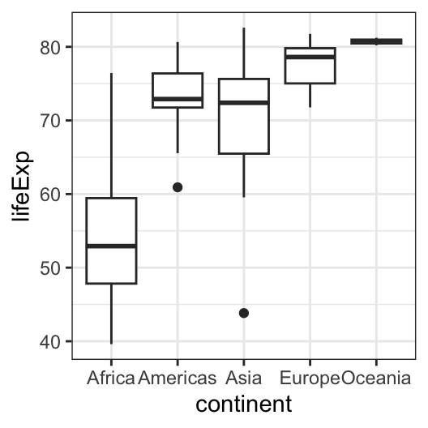
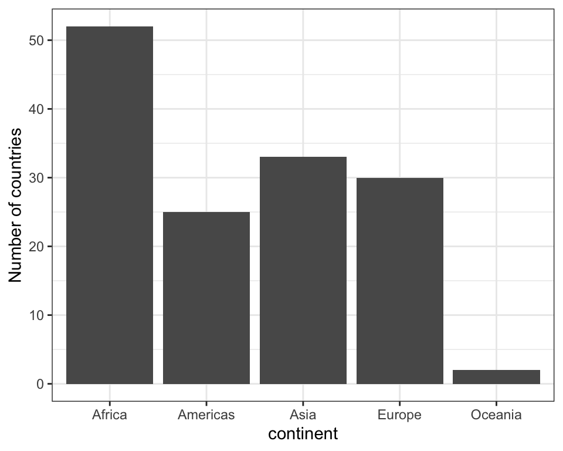
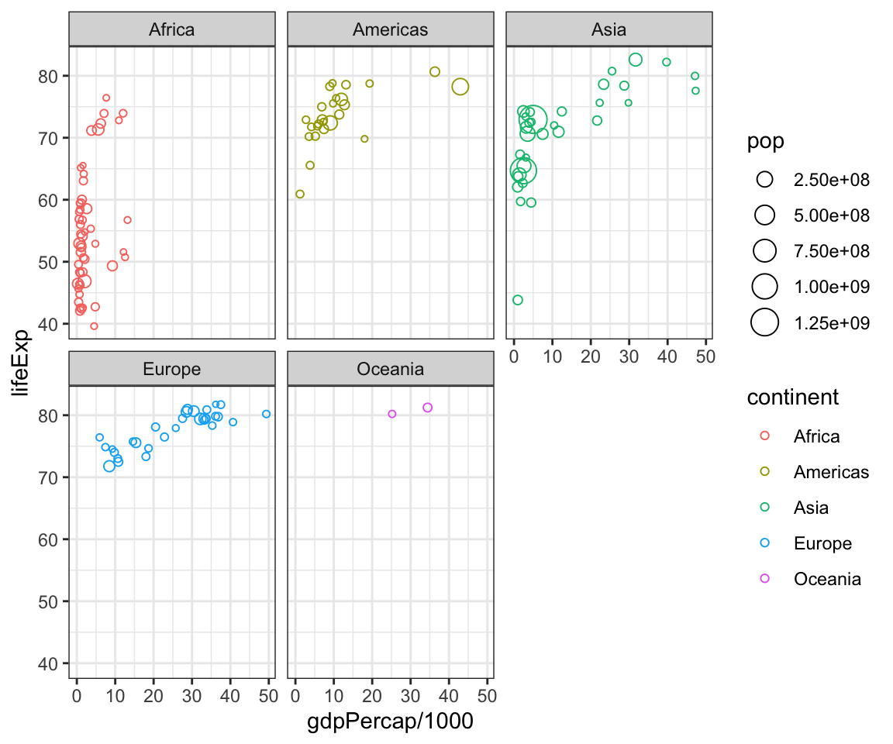
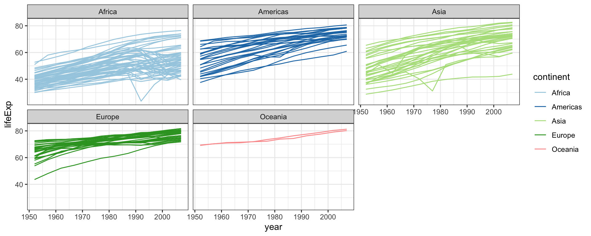
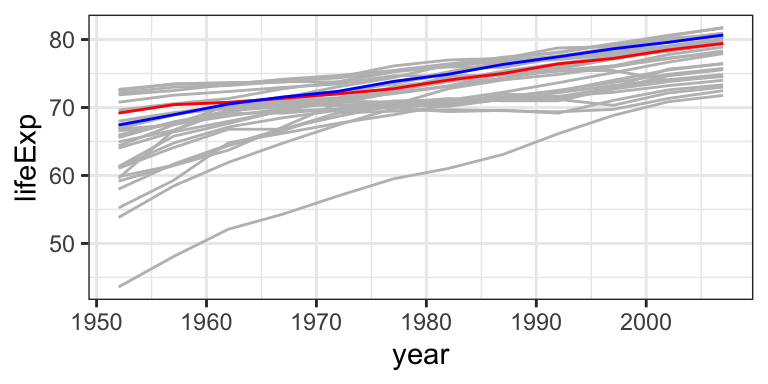
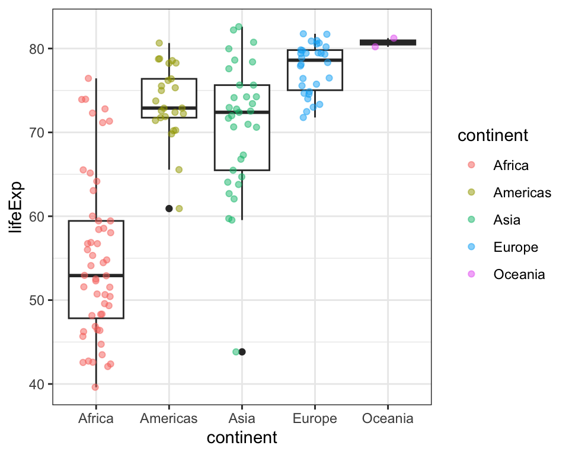
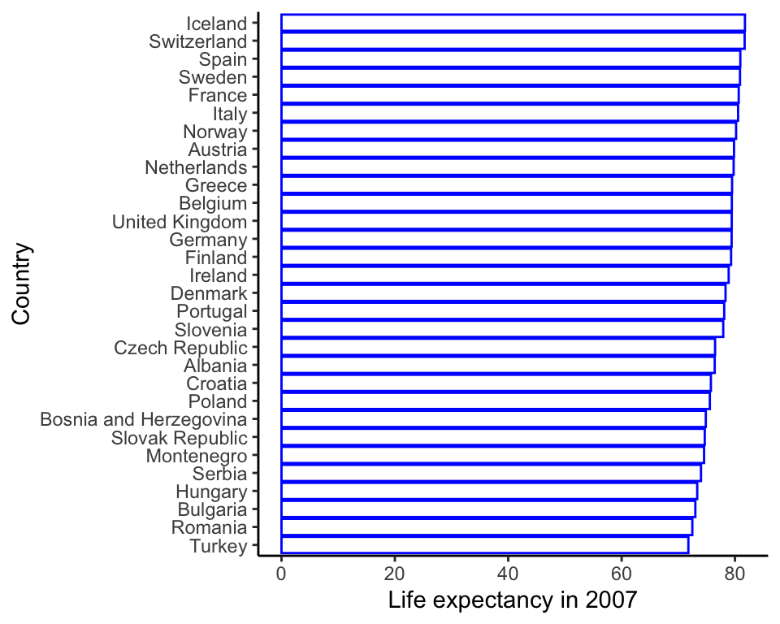

Plotting in R
We will be using the gapminder dataset, which is already available once you load the package:
mydata <- gapminder
head(mydata)# A tibble: 6 × 6
country continent year lifeExp pop gdpPercap
<fct> <fct> <int> <dbl> <int> <dbl>
1 Afghanistan Asia 1952 28.8 8425333 779.
2 Afghanistan Asia 1957 30.3 9240934 821.
3 Afghanistan Asia 1962 32.0 10267083 853.
4 Afghanistan Asia 1967 34.0 11537966 836.
5 Afghanistan Asia 1972 36.1 13079460 740.
6 Afghanistan Asia 1977 38.4 14880372 786. country continent year lifeExp
Afghanistan: 12 Africa :624 Min. :1952 Min. :23.60
Albania : 12 Americas:300 1st Qu.:1966 1st Qu.:48.20
Algeria : 12 Asia :396 Median :1980 Median :60.71
Angola : 12 Europe :360 Mean :1980 Mean :59.47
Argentina : 12 Oceania : 24 3rd Qu.:1993 3rd Qu.:70.85
Australia : 12 Max. :2007 Max. :82.60
(Other) :1632
pop gdpPercap
Min. :6.001e+04 Min. : 241.2
1st Qu.:2.794e+06 1st Qu.: 1202.1
Median :7.024e+06 Median : 3531.8
Mean :2.960e+07 Mean : 7215.3
3rd Qu.:1.959e+07 3rd Qu.: 9325.5
Max. :1.319e+09 Max. :113523.1
Scatter plots.
Let’s plot life expectancy against GDP per capita (x = gdpPercap, y=lifeExp) at year 2007:

Exercise 1
Follow the step-by-step instructions to transform the initial grey scatterplot into a colourful 5-panel (one for each continent) bubble plot. Run the chunk after every step to see how it worked and how the plot evolves.
- Copy the 4-line plot code from above to the Exercise box below.
- Add
shape = 1insidegeom_point()(or experiment with any other shape number from your Quickstart Sheet). - Colour each country point by its continent: add
, colour=continentto aes() - Size each country point by its population: add
, size=popto aes() - Put the country points of each continent on a separate panel: add
+ facet_wrap(~continent)after+ geom_point(shape = 1) +. - Make the background white by adding
+ theme_bw()after thefacet_wrap(~continent) - Add
/1000immediately afterx = gdpPercapto divide it by 1000 - it will make the scale easier to read. The units on the plot are then gdpPercap in thousands of dollars.
# Exercise 1 - your R code:Line chart/timeplot - geom_line()
Let’s plot life expectancy against year (x = year, y=lifeExp), add geom_line():
The reason you now see this weird zig-zag is that, using the above code, R does not know you want a connected line for each country. Specify how you want data points grouped to lines: group = country in aes():
Exercise 2
Similarly to Exercise 1, follow the step-by-step instructions to transform the initial black lineplot into a colourful 5-panel one.
- Colour lines by continents: add
, colour=continenttoaes() - Put the Continents on separate facets:
+ facet_wrap(~continent) - Make the background white:
+ theme_bw() - Use a nicer colour scheme:
+ scale_colour_brewer(palette = "Paired")
Exercise 3
After filtering to European countries only (note the filter(continent == "Europe") %>%), we can plot life expectancy over time in grey colour for all countries, then add United Kingdom as a red line. Run this chunk to see how that looks.
Add in another coloured line, e.g. France in blue.
# Exercise 3 - copy the last line and modify to to France and blue
mydata %>%
filter(continent == "Europe") %>% #Europe only
ggplot(aes(x = year, y=lifeExp, group = country)) +
geom_line(colour = "grey") +
theme_bw() +
geom_line(data = filter(mydata, country == "United Kingdom"), colour = "red")
Box-plot - geom_boxplot()
We can plot the distribution of life expectancies within each continent at year 2007 by:
- Filtering for one year:
filter(year == 2007) %>% - Changing the variables specified in
aes():x = continent, y = lifeExp - adding the
+ geom_boxplot()instead of_lineor_point.
Run the chunk below to see what a basic boxplot looks like:
mydata %>%
filter(year == 2007) %>%
ggplot(aes(x = continent, y = lifeExp)) +
geom_boxplot() +
theme_bw()
Exercise 4
Add individual (country) points on top of the box plot. Do Ctrl+Enter after every step to see how it changes.
- Copy the boxplot code from above and add in a second geom:
+ geom_jitter(). - Add
aes(colour=continent)insidegeom_jitter()to give the points some colour. - Add
, width = 0.2after theaes(colour=continent)but still insidegeom_jitter(). This will bring the jittered points together towards the centre of each continent. - Now after the width, still inside jitter, add
, alpha=0.6. This will make the points semi-transparent.
#Exercise 4 - your R code:Discuss: what’s the difference between geom_point() and geom_jitter(). Hint: you can experiment by just changing it from jitter to point - your solution to Exercise 4 will still work.
Barplot - geom_bar() and geom_col()
In the first module, we plotted barplots from already summarised data (using the geom_col), but geom_bar() is perfectly happy to count up data for you. For example, we can plot the number of countries in each continent without summarising the data beforehand:
mydata %>%
filter(year == 2007) %>%
ggplot(aes(x = continent)) +
geom_bar() +
ylab("Number of countries") +
theme_bw()
Exercise 5
Create a barplot of life Expectancies in European countries (year 2007):
- Copy the barplot example from above.
- Add in a filter for
continent == "Europe". - Change
xto equal country, add inythat equals lifeExp (both inside theaes()). If you now run the code, you will get an error that saysError: stat_count() must not be used with a y aesthetic.. What this is really saying thatgeom_bar()does not want to see a y value - as it just counts up the number of occurrences in the data. - Change from
geom_bar()togeom_col(). - Change the
ylab()to “Life expectancy in 2007”. - Add
+ coord_flip(). - Change from
theme_bw()totheme_classic(). - Optional: give the bars a blue outline by adding
colour = "blue", fill = NAintogeom_col(). - Optional: reorder the countries based on their lifeExp value by changing the x variable to
fct_reorder(country, lifeExp). - Optional: add
+ xlab("Country").
# Exercise 5 - your R code:Solutions
Exercise 1 solution
mydata %>%
filter(year == 2007) %>%
ggplot(aes(x = gdpPercap/1000,
y=lifeExp,
colour=continent,
size=pop)) +
geom_point(shape = 1) +
facet_wrap(~continent) +
theme_bw()
Exercise 2 solution
mydata %>%
ggplot(aes(x = year,
y=lifeExp,
group = country,
colour=continent)) +
geom_line() +
facet_wrap(~continent) +
theme_bw() +
scale_colour_brewer(palette = "Paired")
Exercise 3 solution
After filtering to European countries only (note the filter(continent == "Europe") %>%), we can plot life expectancy over time in grey colour for all countries, then add United Kingdom as a red line. Run this chunk to see how that looks.
Add in another coloured line, e.g. France in blue.
mydata %>%
filter(continent == "Europe") %>% #Europe only
ggplot(aes(x = year, y=lifeExp, group = country)) +
geom_line(colour = "grey") +
theme_bw() +
geom_line(data = filter(mydata, country == "United Kingdom"), colour = "red") +
geom_line(data = filter(mydata, country == "France"), colour = "blue")
Exercise 4 solution
mydata %>%
filter(year == 2007) %>%
ggplot(aes(x = continent, y = lifeExp)) +
geom_boxplot() +
theme_bw() +
geom_jitter(aes(colour=continent), width = 0.2, alpha = 0.5)
Exercise 5 solution
mydata %>%
filter(year == 2007) %>%
filter(continent == "Europe") %>%
ggplot(aes(x = fct_reorder(country, lifeExp), y = lifeExp)) +
geom_col(colour = "blue", fill = NA) +
ylab("Life expectancy in 2007") +
xlab("Country") +
theme_classic() +
coord_flip()